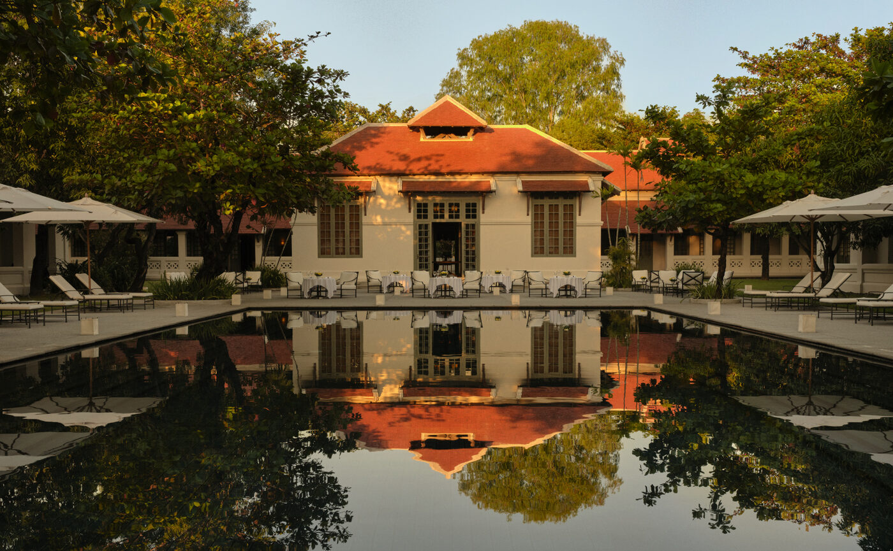

On 26 October the monasteries of Luang Prabang will carry their bamboo boats down the main street and set them alight on the Mekong. Amantaka, the French hospital of 1923 that Aman turned into twenty-four suites, sits a stroll from the water.
Buddhist Lent began on the July full moon. For three months the monks of Luang Prabang have stayed inside their temple walls to study; weddings were put off, and many households gave up meat or drink. The October full moon ends it. Boun Ok Phansa falls on a Monday this year, and in this town the night has its own name, Lai Heua Fai, letting the fire boats go.
Every neighbourhood and every monastery builds one. The heua fai is a long boat of bamboo and paper, worked into nagas and dragons and Buddhist emblems, then set with hundreds of candles. After dark the boats are carried down the main street to drums, launched one by one onto the river and left to drift. Around them go the khatong, small banana-leaf rafts holding a flower, a stick of incense, a candle and a coin, each one carrying somebody's bad year downstream. The next day, in Vientiane, the racing pirogues go out.
The X-ray room
Amantaka stands at the foot of Mount Phousi on Kingkitsarath Road, between the Mekong and the Nam Khan. The buildings went up in 1923 as the provincial hospital under the French, wide corridors, high ceilings, terracotta roofs, and stayed a hospital until 2005. Aman opened here in September 2009. The reception desk is in what was the X-ray room, and nine of the fifteen buildings on the estate are on the UNESCO list in their own right. The name joins Aman to Tipitaka, the teaching of the Buddha.
There are twenty-four suites, all with four-poster beds and wooden louvres, set around lawns of frangipani and mango. The plain Suite opens onto a courtyard shaded by mango trees. The Pool Suite adds a private pool in its courtyard; the Khan and Mekong Pool Suites, named for the two rivers, add a proper living room and outdoor lounge. The Amantaka Pool Suite has wraparound verandas, its own library and study, a garden and a swimming pool. The pools are heated through the short highland winter, which matters more than it sounds in a January dawn.
The resort's own gallery shows how it marks the festival night: marigold floats on the main pool, paper lanterns along the coping, the loungers pulled back under the trees. The river is a few minutes' walk. The steps below Wat Xieng Thong are where the town watches the boats go out.

Dinner at the pool's edge, the old hospital wards reflected in the water · Courtesy of Aman
A monk on the staff
Luang Prabang has more than 1,200 monks and over thirty temples, and the daily alms round, Tak Bat, passes the resort gate at first light. Aman steers guests to this stretch rather than the main street, where the crowds are; one alms offering is included in every stay, the rice prepared in the resort's kitchen. Amantaka has also opened a Buddhist Learning Centre, where a senior monk gives a private teaching each day of up to an hour and a half. He begins by asking what you know, then works through the five precepts of a good life.
The rest of the calendar runs outward from the town. Paul Bloxham, a painter who has lived here for years, leads sketch walks through the old quarter for guests who have never held a pencil. Ock Pop Tok at Ban Saylom teaches the three kinds of Lao weaving in a restored wooden house and sends you home with a scarf you dyed yourself. The resort's boats go upriver to the Pak Ou caves or downstream for cocktails at sunset. Kuang Si, the three-tiered limestone waterfall, comes with breakfast laid at a table in front of it, and the drive to Ban Long Lao passes through Khmu and Hmong villages on the way. There is an equestrian school with ethological riding lessons, and a candlelit dinner at a farmhouse above the paddies.
The town builds boats to carry away a year. The hotel keeps the candles on the pool until morning.
The Splendid EditBanana leaf
The Restaurant has lofty ceilings, antique tiles underfoot and a white and rattan palette. The Lao dishes are the point: fish or vegetables steamed in banana leaf with coriander and coconut milk, and a Lao Royal Court Cuisine menu of recipes handed down from the palace kitchens, served on woven mats. Cooking classes start at the morning market and finish on the resort's organic farm. The Pool Terrace between the library and the pool takes lunch and dinner outside; the Lounge mixes the Makkam, tamarind juice with vodka, lime, ginger and lemongrass, and the Laojito, a mojito with basil. Afternoon tea is in the Library, and is included, as is a three-course lunch or dinner every day.
Spiritual Laos is the three-night package, valid to March 2028: a 120-minute Baci Cleansing Journey in the spa, an ancient Laotian bath followed by a 75-minute massage, plus monk chanting, a Buddhist talk and a meditation. The hydrotherapy rooms, steam, sauna, hot and cold plunge, are open to every guest. The airport is ten minutes away, and the transfer comes with fast-track security on arrival. Amansara in Siem Reap reopens on 15 September with its new pool suites, and the Indochina Past and Present journey links the two houses at three nights each. Between Angkor and the fire boats, that is a fortnight well spent.
Accommodation, inclusions, dining and experiences from aman.com (Amantaka pages updated April to July 2026). Festival dates and customs from Lao tourism sources and the Asia Safari Laos guide to Ok Phansa 2026. Building history from Khiri Travel.
Photography courtesy of Aman — © Aman, Amantaka